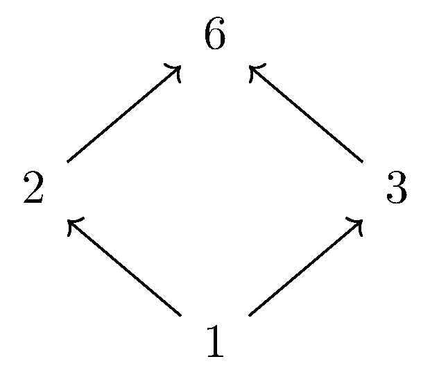

May 15th
Today I learned about incidence algebras taking advantage of the digraph structure of posets, from Combinatorial Reciprocity Theorems as usual. To review, last time we reduced the problem of counting order-preserving maps $\varphi:X\to[n]$ to counting multichains of length $n$ in the lattice of order ideals $\mathcal J(X)$ from $\emp$ to $X.$
To count multichains, we note that viewing the poset as a directed graph means we're really counting the number of directed paths of given length through $\mathcal J(X).$ For this, we would like to introduce an adjacency matrix, but to make the presentation more concrete, we take the following lemma.
Lemma. Given a poset $(X,\le),$ there is a bijective order-preserving map $\varphi:X\to[\#X].$ This $\varphi$ is called a linear extension of $X.$
This is by induction on $\#X=:n.$ If $n=0$ or $n=1,$ there is nothing to prove here: any map will do.
For the inductive step, we claim that $X$ has a maximal element which is not less or equal to than any other element. We could prove this by induction too: if $\#X=0$ or $\#X=1,$ then any element will work, and for the inductive step, we can take $\#X=n+1$ and remove some $x\in X$ so that\[\#(X\setminus\{x\})=n\]has a maximal element, say $x_0.$ Then either $x\le x_0$ so that $x_0$ remains maximal in $X,$ or $x_0\le x$ so that every $x'\in X$ has $x'\le x_0\le x,$ implying $x$ is maximal.
Anyways, the point is that for $\#X=n+1,$ we can remove a maximal element $x_0\in X$ and then use the inductive hypothesis to pick up our bijective order-preserving map $\varphi_0:(X\setminus\{x_0\})\to[n].$ Then we extend $\varphi_0$ to $\varphi:X\to[n+1]$ by\[\varphi(x)=\begin{cases} \varphi_0(x) & x\ne x_0, \\ n+1 & x=x_0.\end{cases}\]This is surjective because\[\varphi(X)=\varphi(X\setminus\{x_0\})\cup\varphi(\{x_0\})=[n]\cup\{n+1\}=[n+1],\]so $\varphi$ is in fact bijective because $\#X=\#[n+1].$ Further, to show $\varphi$ is order-preserving, we fix $x_1,x_2\in X$ with $x_1\le x_2$ and have the following cases.
-
If $x_2\ne x_0,$ then we note that $x_1\ne x_0$ because $x_2\lneq x_0.$ Thus, $x_1,x_2\in X\setminus\{x_0\},$ so $\varphi(x_1)\le\varphi(x_2)$ follows from the order-preserving property of $\varphi_0.$
-
If $x_2=x_0,$ then we note that $\varphi(x_2)=n+1$ is the largest element of $[n+1],$ so surely $\varphi(x_1)\le\varphi(x_2).$
Having dealt with all cases, we are done here. $\blacksquare$
The above lemma gives us a natural way to order the elements of $X.$ Namely, we can enumerate $X=\{x_1,\ldots,x_n\}$ for $n=\#X$ by $x_k=\varphi^{-1}(k)$ (this is well-defined because $\varphi$ is bijective) so that $x_k\le x_\ell$ implies $k\le\ell.$
Note that this ordering is not canonical—we have to choose some $\varphi$—so we do remark that what follows can be done without doing any ordering at all. However, I'm choosing this presentation so that I can actually write down an adjacency matrix and similar. To account for guilt, I will give definitions without using the linear extension.
Namely, we take the following definition.
Definition. Given a poset $(X,\le),$ we define the function \[\zeta_X(x,y):=\begin{cases} 1 & x\le y, \\ 0 & \text{else}. \end{cases}\] We will suppress the subscript as much as possible.
This is essentially the adjacency matrix of our directed graph. For example, if we take $X=\{1,2,3,6\}$ ordered by divisibility ($a\le b\iff a\mid b$), then we can choose $\varphi:X\to[4]$ by ordering $X$ by size. (This works because $a\mid b$ implies that $a$ is no greater than $b.$) Here's the Hasse diagram.

And here's our $\zeta$ adjacency matrix, where we have our basis $\{e_k\}$ ordered by the linear extension $\varphi.$\[\zeta_X=\begin{bmatrix} 1 & 1 & 1 & 1 \\ & 1 & & 1 \\ & & 1 & 1 \\ & & & 1\end{bmatrix}.\]It will be helpful for us to generalize the adjacency matrix a little bit so that we have a little more groundwork.
Definition. Given a poset $(X,\le),$ we define the incidence $\CC$-algebra $I(X)$ by functions $\alpha:X\times X\to\CC$ which consist of functions satisfying \[\alpha(x,y)=0\quad\text{for}x\not\le y.\]
In other words, our incidence algebra essentially consists of matrices which has $0$ where $\zeta$ has $0.$ We will equip $I(X)$ with pointwise addition and matrix multiplication. To be more canonical, we can more explicitly define our multiplication of $\alpha,\beta\in I(X)$ by\[(\alpha*\beta)(x,z)=\sum_{y\in X}\alpha(x,y)\beta(y,z).\]Note that $I(X)$ is closed under $*$ because the existence of a $y\in X$ with $\alpha(x,y),\beta(y,z)\ne0$ guarantees that $x\le y\le z$; i.e., $x\not\le z$ implies $(\alpha*\beta)(x,z)=0.$ Anyways, this is actually a $\CC$-algebra because matrix multiplication distributes over matrix addition.
The point of generalizing the adjacency matrix like this was to create a canonical matrix multiplication. Now that we can take powers of the adjacency matrix, we note the following.
Proposition. Fix a poset $(X,\le)$ and nonnegative integer $n.$ Then given $x,y\in X,$ we have that $\zeta^n(x,y)$ is equal to the number of $n+1$-multichains \[x=x_0\le x_1\le\cdots\le x_{n-1} \lt x_n=y.\]
Now we are doing graph theory. Because we are essentially counting paths of prescribed length in the directed graph of $X,$ we can use the adjacency matrix $\zeta_{\mathcal J(X)}.$ In particular, we proceed by induction on $n.$ If $n=0,$ then $\zeta^0$ is the "identity matrix'' (by definition), which is defined by\[\zeta^0(x_1,y_1)=\begin{cases} 1 & x_0=x_1, \\ 0 & \text{else}.\end{cases}\]In particular, the only possible path from $x$ to $y$ of length $1$ is the identity path, which will occur when $x=y.$ This finishes our base case.
For the inductive step, we suppose $n$ and prove $n+1.$ Well, the key observation is that\[\zeta^{n+1}(x,y)=\left(\zeta^n*\zeta\right)(x,y)=\sum_{z\in X}\zeta^n(x,z)\zeta(z,y)=\sum_{y\le z}\zeta^n(x,z).\]Indeed, we can count the number of $n+1$-multichains\[x=x_0\le x_1\le\cdots\le x_{n-1}=x_n\le x_{n+1}=y\]by looping over the possible $z=x_n\le y$ and then counting the number of ways for us to go from $x$ to $z$ in $n$ steps, which is $\zeta^n(x,z).$ (There is no overlap between these cases because $x_n$ is distinct between cases.) This is the given sum. $\blacksquare$
In particular, we can say the following.
Proposition. Given a poset $(X,\le)$ and nonnegative integer $n,$ the number of (weakly) order-preserving maps $\varphi:X\to[n]$ is equal to $\zeta^n_{\mathcal J(X)}(\emp,X).$
As discussed yesterday, the number of order-preserving maps $\varphi:X\to[n]$ is equal to the number of ascending $n$-chains\[\emp=I_0\subseteq I_1\subseteq\cdots\subseteq I_{n-1}\subseteq I_n=X\]in $\mathcal J(X).$ The above proposition says that this is equal to $\zeta_{\mathcal J(X)}^n(\emp,X),$ finishing. $\blacksquare$
We talked about the "identity matrix'' in the proof of the first proposition, and this turns out to play a somewhat important role.
Definition. Given a poset $(X,\le),$ we define \[\delta_X(x,y):=\begin{cases} 1 & x=y, \\ 0 & \text{else}. \end{cases}\] Again, we will suppress the subscript as much as possible.
Quickly, $\delta$ is in the incidence algebra because $x\not\le y$ implies $x\ne y$ implies $\delta_X(x,y)=0.$ We didn't check this in the proof, but this does satisfy $\delta*\alpha=\alpha*\delta=\alpha$ for $\alpha\in $ This can be seen quickly from the definition of $*,$ or we can just note that placing this in a linear extension makes $\delta$ the identity matrix.
It will also turn out to be helpful to define $\eta:=\zeta-\delta.$ If we write out the definitions of $\zeta$ and $\delta,$ we see\[\eta_X(x,y)=\begin{cases} 1 & x\le y\text{ and }x\ne y, \\ 0 & \text{else},\end{cases}\]for $x,y\in X.$ It turns out that $\eta$ has some analogous behavior to $\zeta.$
Proposition. Fix $(X,\le)$ and nonnegative integer $n.$ Then given $x,y\in X,$ we have that $\zeta^n(x,y)$ is equal to the number of $n+1$-chains \[x=x_0 \lt x_1 \lt \cdots \lt x_{n-1} \lt x_n=y.\]
The proof is almost identical to the one for $\zeta.$ We induct on $n.$ For $n=0,$ we again have $\eta^0=\delta,$ and indeed, the number of $1$-chains from $x$ to $y$ in $X$ is equal to $1$ if $x=y$—our chain is $x$—and $0$ otherwise.
For the inductive step, we suppose $n$ and prove $n+1.$ The key observation is again that\[\eta^{n+1}(x,y)=\left(\eta*^n\eta\right)(x,y)=\sum_{z\in X}\eta^n(x,z)\eta(z,y)=\sum_{y \lt z}\eta^n(x,z).\]Indeed, we can count the number of $n+1$-chains\[x=x_0\le x_1 \lt \cdots \lt x_{n-1}=x_n \lt x_{n+1}=y\]by looping over the possible $z=x_n \lt y$ and then counting the number of ways for us to go from $x$ to $z$ in $n$ steps, which is $\eta^n(x,z).$ (Again, there is no overlap between these cases because $x_n$ is distinct between cases.) This is the given sum. $\blacksquare$
The real reason we've written out the above proof is that it tell us $\eta$ is nilpotent for finite $X$—in particular, $\eta^{\#X}=0.$ Indeed, if we fix $x,y\in X$ and nonnegative integer $n,$ then the existence of a $n+1$-chain\[x=x_0 \lt x_1 \lt \cdots \lt x_{n-1} \lt x_n=y\]implies that there are at least $n+1$ elements in $X.$ Thus, $\eta^{\#X}=0.$
This introduces our main trick. It is a very valid point that there is no good reason for powers of $\zeta$ to have coefficients which grow polynomially in the exponent; after all, eigenvalues will grow exponentially. However, we have the following idea to remedy this.
Idea. We can write $\zeta=\delta+\eta$ so that \[\zeta^n=(\delta+\eta)^n=\sum_{k=0}^n\binom nk\eta^k.\] The binomial theorem applies here because powers of $\eta$ commute. Because $\eta$ is nilpotent of degree $\#X,$ we can then write \[\zeta^n=\sum_{k=0}^{\#X-1}\binom nk\eta^k,\] which is indeed a polynomial in $n.$ (We have $\binom nk=0$ if $n \lt k.$ This is also compatible with the polynomial version of $\binom nk.$) In particular, $\eta^k$ might be large, but it is constant with respect to $n.$
We can refine this a bit for the lattice of order ideals to re-prove a result from earlier.
Proposition. Given a finite poset $(X,\le)$ and nonnegative integer $n,$ the number of weakly order-preserving maps $\varphi:X\to[n]$ is a polynomial in $n,$ of degree no greater than $\#X.$ We call this polynomial $W_X(n).$
We refine the degree of $\eta$ in the lattice of order ideals. In particular, the existence of a chain\[I_0\subsetneq I_1\subsetneq\cdots\subsetneq I_{n-1}\subsetneq I_n\]implies that $X$ has at least $n$ elements because\[X=I_n=\bigcup_{k=1}^nI_k\setminus I_{k-1}\]is then a disjoint union of of $n$ nonempty sets. It follows that $\eta_{\mathcal J(X)}^{\#X+1}=0.$ Now, we note that we already know that we are interested in $\zeta_{\mathcal J(X)}^n(\emp,X),$ so\[\zeta_{\mathcal J(X)}^n=\left(\delta_{\mathcal J(X)}+\eta_{\mathcal J(X)}\right)^n=\sum_{k=0}^n\binom nk\eta_{\mathcal J(X)}^k.\]But again, we can cut this off at $k=\#X$ because $\eta^{\#X+1}=0,$ so\[\zeta_{\mathcal J(X)}^n=\sum_{k=0}^{\#X}\binom nk\eta_{\mathcal J(X)}^k=:W_X(n).\]Plugging in for $\zeta_{\mathcal J(X)}^n(\emp,X)$ makes this a polynomial in $n$ because $\eta_{\mathcal J(X)}^k(\emp,X)$ is just some constant. Because the largest power of $n$ comes from $\binom n{\#X},$ the polynomial has degree at most $\#X,$ finishing. $\blacksquare$
For our combinatorial reciprocity, we are interested in evaluating the polynomial $\zeta^n_{\mathcal J(X)}(\emp,X)$ at negative integers. Note that there is something to be checked here because $\zeta^{-n}_{\mathcal J(X)}(\emp,X)$ might not agree with our polynomial representation $W_X(n)$ of $\zeta^n_{\mathcal J(X)}(\emp,X)$ evaluated at negative inputs.
As an aside, it's not even obvious that $\zeta^{-1}$ is in the incidence algebra. It does turn out when inverses exist, they are in the incidence algebra, but we haven't shown this.
Anyways, It turns out that there's nothing to be afraid of, but we have to be careful.
Proposition. Given a finite poset $(X,\le)$ and positive integer $n,$ we have that $W_X(-n)=\zeta_{\mathcal J(X)}^{-n}(\emp,X).$
We begin by noting\[\zeta^{-1}=\frac1{\delta+\eta}=\sum_{k=0}^\infty(-\eta)^k=\sum_{k=0}^{\#X}(-\eta)^k.\]This manipulation is technically formal—the infinite sum doesn't actually make sense—but we can make it rigorous by saying\[\delta=\delta^{\#X+1}+(-\eta)^{\#X+1}=\underbrace{(\delta+\eta)}_{\zeta}\underbrace{\sum_{k=0}^{\#X}(-\eta)^k}_{\zeta^{-1}}\]because $\delta^{\#X+1}=\delta$ and $\eta^{\#X+1}=0.$ Taking this series to the power of some fixed positive integer $n,$ we see that\[\zeta^{-n}=\left(\sum_{k=0}^{\#X}(-\eta)^k\right)^n=\sum_{\{k_\ell\}_{\ell=1}^n\subseteq[1,\#X]}\prod_{\ell=1}^n(-\eta)^{k_\ell}\]by direct expansion. (Powers of $-\eta$ commute, so we don't have to pay attention to order of multiplication.) The addend here is just $(-\eta)$ to the power of $\sum_\ell k_\ell,$ so we group by this sum. The number of sequences $\{k_\ell\}_{\ell=1}^n\subseteq[1,\#X]$ which sum to $K$ is equal to $\binom{n+K-1}{n-1}=\binom{n+K-1}K$ by stars and bars. Thus,\[\zeta^{-n}=\sum_{K=0}^{n\#X}\binom{n+K-1}K(-\eta)^K=\sum_{K=0}^{\#X}(-1)^K\binom{n+K-1}K\eta\]again using the fact that $\eta$ is nilpotent of order $\#X.$ (I did promise we are going to get a lot of mileage out of $\eta$ being nilpotent.) To finish, we see that $(-1)^K\binom{n+K-1}K=\binom{-n}K$ (as polynomials) from a few days ago, so indeed,\[\zeta^{-n}=\sum_{k=0}^{\#X}\binom{-n}k\eta^k,\]which matches up with $W_X(-n).$ So we are done here. $\blacksquare$
We quickly note that the substance of the above proof is essentially just saying that the binomial theorem expansion\[\zeta^{-n}=(\delta+\eta)^{-n}=\sum_{k=0}^\infty\binom{-n}k\eta^k\]is valid. Of course, this assertion requires proof, and its proof is above.
We close by remarking we began by moving our study from order-preserving maps to multichains in the lattice of order ideals. Today we have moved our problem into merely trying to understand the matrix $\zeta$ inside of the incidence algebra. In particular, we just have to study how negative powers of $\zeta$ behave with the lattice of order ideals.